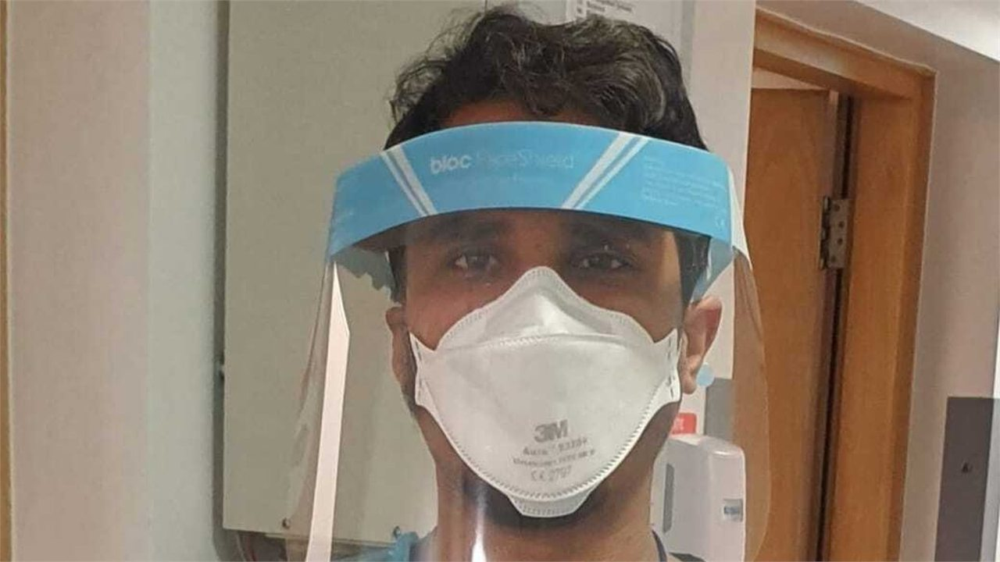
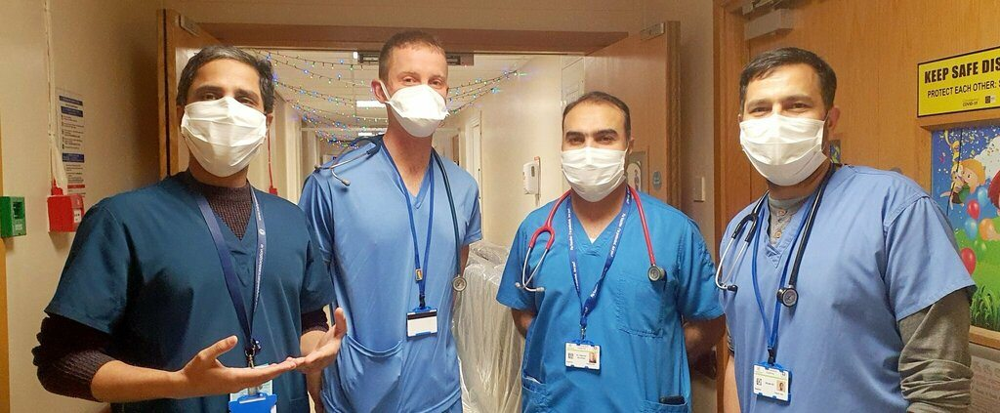
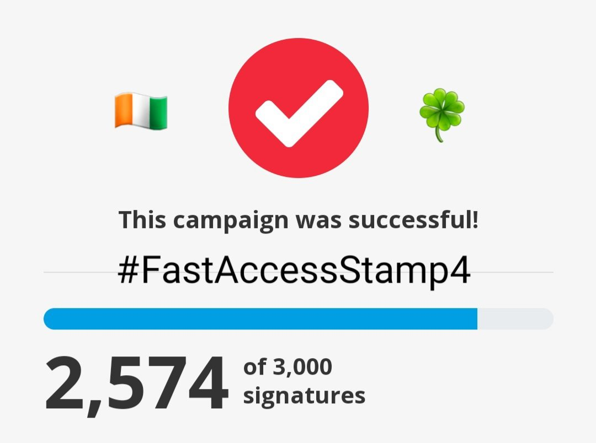
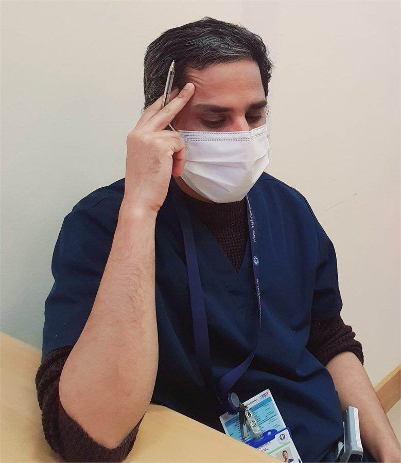
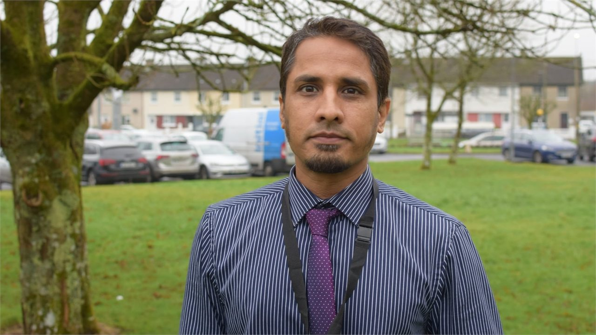

Showing 18 references
Up to 1,800 doctors to benefit from immigration changes
RTÉ News
RTÉ reported that immigration changes would benefit up to 1,800 doctors by granting additional rights and reducing administrative burden.
Read Article
RTÉ NewsNon-EEA doctors welcome work permit and visa changes
RTÉ News
RTÉ reported on work permit and visa changes welcomed by non-EEA doctors who had campaigned for reform around specialist training and immigration barriers.
Read ArticleFaster stamp 4 access for non-EU doctors ‘an historic step’ – Train Us For Ireland
Medical Independent
Medical Independent reported Train Us For Ireland’s response to the announcement of faster Stamp 4 access for non-EU doctors on general employment permits.
Read Article
MyUplift#FastAccessStamp4 for all international doctors in Ireland
MyUplift
A public campaign calling for earlier Stamp 4 access and recognition of the contribution of international doctors working in Ireland.
Read Article
Campaign videoX/Twitter Campaign Video: #FastAccessStamp4
X / Twitter
Social media campaign video linked to advocacy for faster Stamp 4 access for international doctors in Ireland.
Read Article
Campaign statementX/Twitter Campaign Post: Non-EEA doctor experience without timely Stamp 4 access
X / Twitter
A social media post highlighting the personal and professional instability experienced by non-EEA doctors without timely Stamp 4 access.
Read ArticleAnalysing training access for international doctors
Medical Independent
A feature examining the impact of policy changes relating to training access for international doctors in Ireland.
Read ArticleOpinion: Are international doctors only here to fill the roster gaps?
TheJournal.ie
Opinion article by Dr Liqa ur Rehman discussing the challenges faced by non-EU doctors in Ireland, including career progression and training barriers.
Read ArticleLegal questions over treatment of non-EU doctors in training application process
Medical Independent
Medical Independent reported concerns raised at a seminar regarding the treatment of non-EU doctors and Stamp 4 holders in specialist training applications.
Read ArticleForeign doctors may leave if they don’t get critical skills permit
Irish Examiner
Irish Examiner reported calls for changes to contract and permit structures so international NCHDs could access critical skills employment permits.
Read ArticleDemand for migrant workers sparks surge in employers seeking work permits
Newstalk
Newstalk reported increased employer demand for work permits, with doctors among the professions sought in the Irish labour market.
Read ArticleDoctors call for visa reform so families can join them
RTÉ News
RTÉ reported calls from international doctors for reform of visa processing so family members could join doctors working in Ireland.
Read ArticleDoctors highlight need for locum reforms
Medical Independent
Medical Independent reported concerns about locum terms, pay rates, and restrictions affecting doctors, including issues raised by Train Us For Ireland.
Read ArticleDoctors from outside EU waiting up to year for family visa decisions
Irish Examiner
Irish Examiner reported that doctors from outside the EU working in Ireland were experiencing long waits and refusals for family visa applications.
Read ArticleUrgent call to immediately resolve family visa delays #FastTrackFamilyVisa
MyUplift
A public petition calling for action on family visa delays, communication gaps, and processing concerns affecting skilled professionals and healthcare workers.
Read ArticleInternational doctors urge Ireland to amend visa policies to allow their families to join them
Think Europe
Think Europe summarised calls from international doctors in Ireland for family reunification visa reform and highlighted reported delays and rejection concerns.
Read ArticleLosing Doctors from the Health Service because of our Visa System
Tortoise Shack
Podcast episode featuring discussion of family reunification visa difficulties affecting doctors and concerns about doctor retention in Ireland.
Read Article
RTÉ NewsMigrant health workers living in fear of racist abuse, warns doctor
RTÉ News
RTÉ reported concerns from Dr Liqa Ur Rehman and healthcare leaders about racist abuse, safety fears, and the impact on migrant healthcare workers in Ireland.
Read ArticleNo references match that search and category. Try a broader term or select “All”.
External links are provided for reference and public information. IAID does not reproduce copyrighted article content. All rights remain with the original publishers.